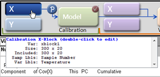
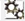
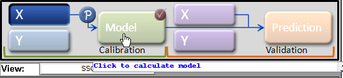
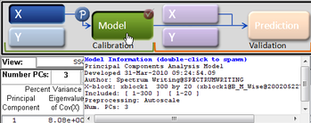
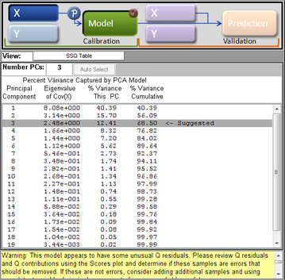
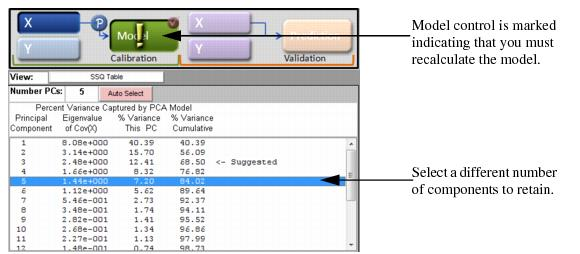

Table of Contents | Previous | Next
Building the Model in the Calibration Phase
Regardless of the analysis method, building a model in the Calibration phase consists of a series of the same general steps, with the second and third steps being iterative, until you are satisfied with your model. These steps are:
| 3.
|
Examining the model and refining the model by excluding certain samples and/or variables to enhance the model performance. See Examining and refining the model.
|
| 4.
|
After you are satisfied with the model, you can then do one of the following:
|
- Save the model and use it at a later date.
|
- Load validation and test data and apply the model immediately.
|
Note: Decomposition and Clustering analysis methods require only x block data for model building in the Calibration phase. Regression analysis methods require both x block data and y block data. Classification analysis methods require x block data with classes in either X or Y. For simplicity and brevity, this section describes model building during the Calibration phase using default preprocessing methods for a simple PCA model; however, all of the general information in this section is applicable for all analysis methods.
Note: Although this section describes model building using default preprocessing methods, remember, for most analyses, it is critical to select the appropriate preprocessing methods for the data that is being analyzed. To review detailed information about preprocessing, see Preprocessing Methods.
Note: To review a detailed description of the Calibration phase, see "Analysis Phases."
Loading the calibration data and building the initial model
You have a variety of options for opening an Analysis window and loading data. Because these methods have been discussed in detail in other areas of the documentation, they are not repeated here. Instead, a brief summary is provided with a cross-reference to the detailed information. Simply choose the method that best fits your working needs.
- To open an Analysis window:
|
- In the Workspace Browser, click the shortcut icon for the specific analysis that you are carrying out.
|
- In the Workspace Browser, click Other Analysis to open an Analysis window, and on the Analysis menu, select the specific analysis method that you are carrying out.
|
- In the Workspace Browser, drag a data icon to a shortcut icon to open the Analysis window and load the data in a single step.
|
- Note: For information about working with icons in the Workspace Browser, see Icons in the Workspace Browser.
- To load data into an open Analysis window:
|
- Click File on the Analysis window main menu to open a menu with options for loading and importing calibration data.
|
- Click the appropriate calibration control to open the Import dialog box and select a file type to import.
|
- Right-click the appropriate calibration control to open a context menu with options for loading and importing data.
|
- Right-click on an entry for a cached item Model Cache pane to open a context menu that contains options for loading the selected cached item into the Analysis window.
|
- Note: For information about the data manipulation options on the context menu, see Icons in the Workspace Browser or Importing Data into the Workspace Browser. For information about loading items from the Model Cache pane, see Analysis window Model Cache pane.
Also, remember that after you load data into a calibration control, you can place your mouse pointer on the control to view not only information about the loaded data, but also, different instructions about working with the control. In the figure below, data has been loaded into the X calibration control for a PCA analysis.
- Example of loaded data in the X calibration control for a PCA analysis
- 
After you have opened the Analysis window and loaded the calibration data, you then calculate the initial model. To calculate the initial calibration model, you can do one of the following:
- On the Analysis window toolbar, click the Calculate/Apply model icon .
|
- Clicking the Model control in the Analysis window
- 
After the initial model is calculated, you can place your mouse pointer on the Model control to view general information about the model. To view detailed information the model, right-click on the Model control and on the context menu that opens, select Show Model Details.
- Showing model details in the Analysis window
- 
Changing the number of components
For analysis methods which use factors or principal components, you can choose a different number of components or factors to retain in the model and then recalculate the model. To choose a different number of components or factors:
| 1.
|
Click on the appropriate row in the Control panel.
|
| 2.
|
Recalculate the model by doing one of the following:
|
- On the Analysis window toolbar, click the Calculate/Apply model icon .
|
Note: By default, the maximum number of principal components or factors that you can retain in a model is 20. You can change this value in the Analysis options settings for the Edit menu. For example, the figure below shows an initial model calculated for a PCA analysis with the suggested value for the number of components to retain set to three.
- Initial model calculated for a PCA analysis with number of suggested components = 3
- 
After you select a different number of components or factors to retain, the Model control is marked with an Exclamation icon indicating that you must recalculate the model.
- Model marked for recalculation
- 
Examining and refining the model
After the model is calculated, the Control pane displays the percent variance captured and other statistical information for the model. For certain analyses, the application provides a suggested number of components or factors to retain for the model based on internal tests. For example, the figure below shows an initial model calculated for a PCA analysis with the suggested value for the number of components to retain set to three.
- Initial model calculated for a PCA analysis with number of suggested components = 3
The Analysis window toolbar is updated dynamically with other toolbar buttons based on the selected analysis method. All of these toolbar buttons create plots and other visual aids that assist you in examining and refining the model by excluding certain samples and/or variables to enhance the model performance. Common toolbar buttons include the following:
Note: All other Analysis window toolbar buttons are specific to an analysis method and therefore, are not discussed in this guide.